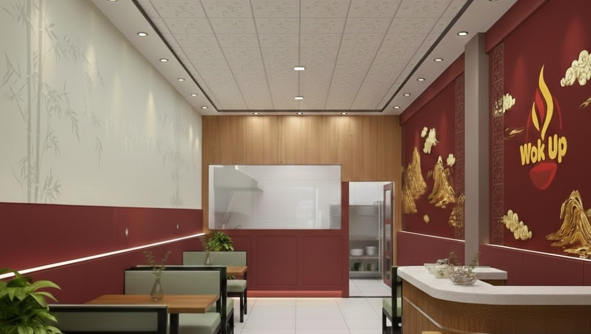

A story of bold flavours, fresh ingredients, and a love for authentic Chinese cuisine — served right here in Lahore.
WokUp was born from a simple belief: that great Chinese food shouldn't be hard to find in Lahore. We set out to create a place where every dish is cooked with care, every ingredient is sourced fresh, and every meal is worth coming back for.
"We don't rush the wok. Every dish gets the heat, the time, and the attention it deserves."
Located opposite Pakistan Mint on GT Road, we've built our reputation one plate at a time — from our silky Chicken Corn Soup to our bold Sichuan Chicken, each recipe is crafted to bring out the best of Chinese culinary tradition.
Whether you're dining in or ordering on WhatsApp, we promise the same: fresh, generous, flavourful food — every single time.

Every dish is cooked live on a high-heat wok. No pre-cooked batches, no shortcuts — just real wok cooking.
We source our ingredients fresh every morning. Nothing sits overnight. What you eat today was prepared today.
Half or Full — we make sure you're satisfied. Our portions are honest, our prices are fair.
No apps to download. Just WhatsApp us your order and we'll take care of everything.
We're on GT Road, opposite Pakistan Mint — easy to find, worth the trip.